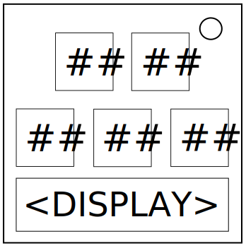

О Сортировке
В чем смысл реализации алгоритмов сортировки, если все равно придется делать её самому?
- Модуль состоит из экрана внизу и пяти кнопок, обозначенных двузначными числами.
Обратитесь к алгоритму указанном на экране.
- Модуль решается путем упорядочивания кнопок от наименьшего к наибольшему числу. (слева направо)
- Позиции считаются относительно их положения слева направо, игнорируя вертикальные отклонения.
Например, нижняя левая кнопка классифицируется как 1-ая позиция.
Сортировка Пузырьком (Bubble)
| Секция 1 |
| Поменять местами если... |
| Число в 1-ой позиции больше числа во 2-ой позиции. |
| Число во 2-ой позиции больше числа в 3-ей позиции. |
| Число в 3-ей позиции больше числа в 4-ой позиции. |
| Число в 4-ой позиции больше числа в 5-ой позиции. |
| Обратитесь к Секции 1. |
Сортировка Перемешиванием (Cocktail)
| Секция 1 |
| Поменять местами если... |
| Выполните Секцию 1 вперёд. |
| Число в 1-ой позиции больше числа во 2-ой позиции. |
| Число во 2-ой позиции больше числа в 3-ей позиции. |
| Число в 3-ей позиции больше числа в 4-ой позиции. |
| Число в 4-ой позиции больше числа в 5-ой позиции. |
| Выполните Секцию 1 обратно. |